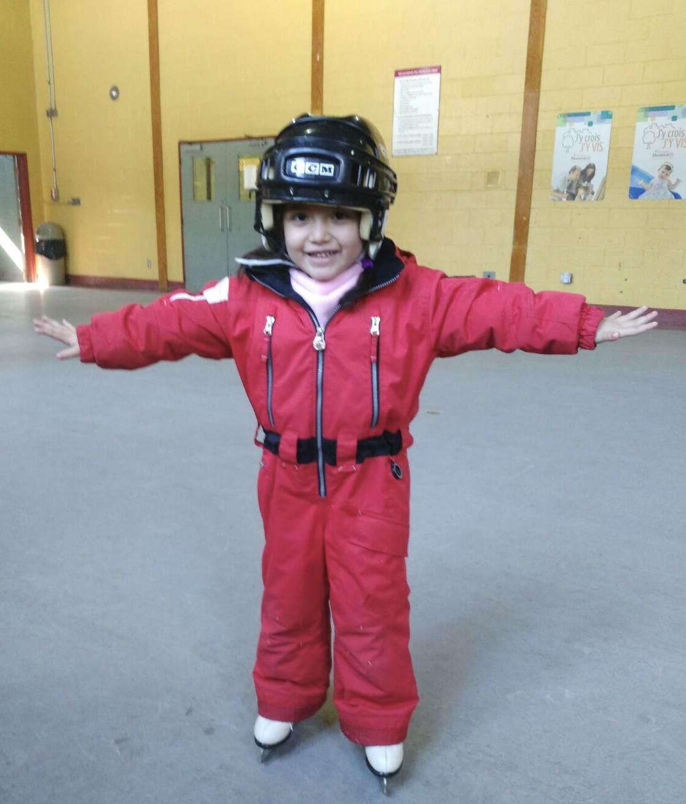

This is a very very very simple website that you click an apple through cycles!!
why?
Why not? this is one of my many website to come for hctg!!
who got this wonderful idea?
It was Daniela!! shes one of my best friends and she sugested it so i decided to make it!

that is daniela when she was young and going skating!
look at the icon image!! it changes!